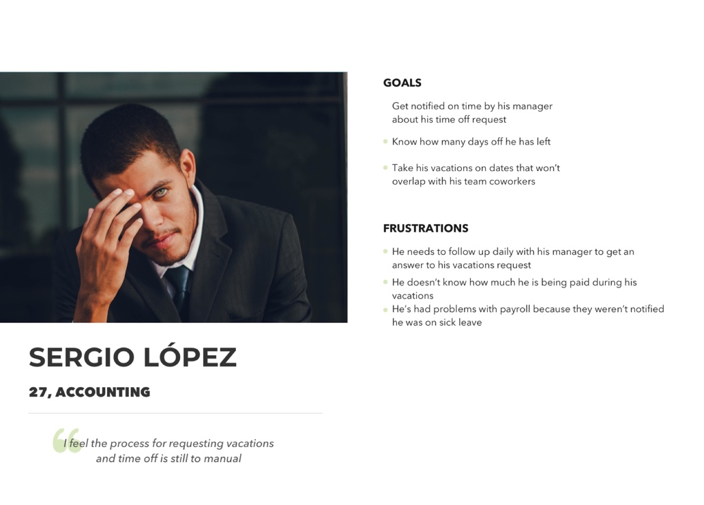

User Personas
Meet the user resulting from the interviews


Web App designed to help the HR department manage employees time off in the workplace to increase productivity
“Companies fall short when their employees aren’t properly measured”
”One of my managers took two months to get back at me regarding my vacations”
”The system should be able to connect to payroll, one time I was paid full for some days I was not in the office and I got into a problem with payroll”
Meet the user resulting from the interviews
Paper Prototypes, Crazy 8's and non stop user testing helped get the most intuitive interaction


In order to understand how the web app works you should put yourself in Elizabeth’s place. For this you will be an HR manager that wants to know how was your teams productivity during the month of April. Since you are the HR team manager you want to check your employees pending vacation requests.